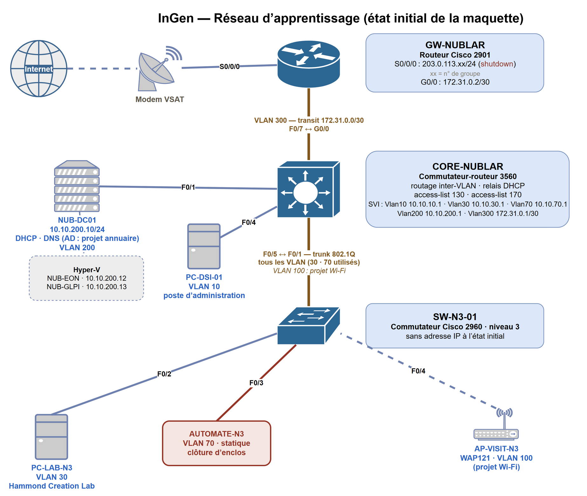

- La cible à atteindre
- Poser les matériels
- Tirer les câbles
- Configurer CORE-NUBLAR
- Configurer SW-N3-01
- Configurer GW-NUBLAR
- Configurer NUB-DC01
- Configurer les postes
- Le jeu d’essais
- Sauvegarder et livrer
- Dépannage express
- Pour aller plus loin
Vos cases cochées et le chronomètre sont enregistrés sur ce poste, dans ce navigateur.
La cible à atteindre
On ne câble pas au fil de l’eau : on reproduit un schéma. Le voici — gardez-le ouvert à côté de Packet Tracer pendant tout le montage.
Aucun fichier ne vous est fourni : c’est vous qui construisez la maquette
fonctionnelle de la configuration existante, celle de la partie 8 du livret. Ce
montage est la première phase du travail
préparatoire. Votre .pkt doit, à la fin de cette fiche, se comporter
exactement comme le décrit le livret — jeu d’essais compris, faiblesses comprises.

draw.io/07-topologie-reseau-apprentissage.drawio.
L’architecture complète d’Isla Nublar est décrite par le
schéma draw.io/03-topologie-isla-nublar.drawio : six commutateurs
d’accès, une DMZ, dix serveurs, quatre coffrets d’enclos — le site tel
qu’il existe dans le contexte. Ce TP n’en construit pas la totalité :
il monte le réseau d’apprentissage (schéma 07 ci-dessus),
qui en est un sous-ensemble fidèle — mêmes adresses, mêmes noms, mêmes VLAN.
SW-N3-01, que vous allez câbler, est le commutateur du niveau 3
du schéma 03. Gardez le 03 en tête comme carte du territoire ; le 07
est votre plan de montage. Étendre la maquette vers le site complet — DMZ, coffrets
d’enclos, autres niveaux — fait partie des projets de l’année, pas de ce TP.
Votre enseignant dispose d’une maquette de démonstration du site complet :
c’est elle que vous avez vue fonctionner en cours.
Vous allez construire l’état initial du réseau, exactement tel que le décrit la partie 8 du livret — y compris ses faiblesses volontaires : aucun mot de passe, Telnet autorisé faute de SSH, VLAN natif laissé à 1, ACL posée dans un seul sens. Ce n’est pas une négligence, c’est le sujet : l’audit de ces faiblesses est le premier travail de l’année (livret, partie 10). Ne corrigez rien pendant le montage, même si un défaut vous saute aux yeux — notez-le, il vous servira.
Ce que la maquette doit savoir faire une fois terminée :
PC-DSI-01etPC-LAB-N3obtiennent leur adresse en DHCP, chacun dans son VLAN, auprès d’un serveur situé dans un autre VLAN ;- la résolution de noms fonctionne :
ping nub-dc01.nublar.intra; - la matrice des flux du livret est respectée — y compris les refus, qui sont des résultats attendus au même titre que les succès.
Poser les matériels
Sept équipements à glisser sur le plan de travail. Le choix du modèle compte : c’est lui qui détermine les interfaces disponibles.
Au lancement, la version 9 demande une connexion à un compte Cisco
Skills for All ou NetAcad (l’accès invité, limité, ne permet pas
de tout sauvegarder — créez le compte une fois pour toutes). Le catalogue classique est
intact : le 2901, le 3560 et le 2960 sont toujours dans
Network Devices → Routers / Switches, et ce mode opératoire s’applique
tel quel. La 9.x ajoute un rayon industriel — automates PLC, commutateurs
durcis IE-3400, pare-feu ISA-3000 — dont la variante OT (Operational Technology, l’informatique industrielle) de l’annexe B tire
parti. Dernier point, important pour la livraison : un .pkt enregistré
en 9.x ne s’ouvre pas dans une version antérieure — toute la
classe travaille donc sur la même version.
| N° | Nom d’affichage | Catégorie Packet Tracer | Modèle | Rôle |
|---|---|---|---|---|
| 1 | GW-NUBLAR | Network Devices → Routers | 2901 | Routeur de sortie |
| 2 | CORE-NUBLAR | Network Devices → Switches | 3560-24PS | Commutateur-routeur de cœur |
| 3 | SW-N3-01 | Network Devices → Switches | 2960-24TT | Commutateur d’accès, niveau 3 |
| 4 | NUB-DC01 | End Devices | Server-PT | DHCP · DNS (l’AD et Hyper-V n’existent pas dans PT) |
| 5 | PC-DSI-01 | End Devices | PC-PT | Poste d’administration, VLAN 10 |
| 6 | PC-LAB-N3 | End Devices | PC-PT | Poste du laboratoire, VLAN 30 |
| 7 | AUTOMATE-N3 | End Devices | PC-PT | Automate de clôture, VLAN 70 — adressage statique |
Maintenant, pour chacun des sept équipements : clic sur
l’icône → onglet Config → champ Display Name,
avec le nom du tableau. C’est tout pour cette étape. Le hostname des trois
matériels Cisco, lui, n’est pas à saisir ici : la commande
hostname ouvre chacun des blocs de configuration des étapes 4, 5 et 6, que
vous collerez tels quels. Le nom d’affichage et le hostname seront alors
identiques : un correcteur qui voit Router0 dans un
show running-config a déjà son opinion.
Le 2901 sort de boîte sans port série ; or l’interface S0/0/0
(liaison VSAT) n’est utilisée qu’au projet « sortie Internet ».
Pour l’état initial elle n’est pas nécessaire, mais l’installer
maintenant évite d’y revenir : onglet Physical du routeur →
éteindre l’équipement (interrupteur) → glisser le module
HWIC-2T dans le logement de droite → rallumer. L’interface
Serial0/0/0 apparaît (vérifiez-le avec show ip interface brief ; si vous lisez Serial0/1/0, le module est dans l’autre logement : déplacez-le), à l’état shutdown — c’est
exactement l’état initial documenté.
L’automate est représenté par un PC-PT renommé : un PC en
adressage statique en est un équivalent fonctionnel honnête, et c’est le choix de
référence de cette fiche — il garantit que le jeu d’essais se déroule à
l’identique sur toutes les versions. Depuis la 9.0, Packet Tracer possède pourtant
de vrais objets industriels (catégorie Industrial : PLC,
IE-3400, ISA-3000) : la variante OT de l’annexe B
les met en œuvre une fois la maquette de base validée. Le point d’accès
AP-VISIT-N3 n’est pas posé à l’état initial —
il arrive avec le projet Wi-Fi (voir Pour aller plus loin).
Tirer les câbles
Six liens cuivre. Le type de câble n’est pas un détail : un mauvais choix donne un lien mort, et Packet Tracer ne corrige pas à votre place.
Pour chaque ligne du plan : choisissez le type de câble dans Connections (icône éclair, en bas à gauche), cliquez sur l’équipement de départ et choisissez l’interface dans le menu, puis faites de même sur l’équipement d’arrivée. Le menu n’affiche que les ports libres : si l’interface demandée n’y est pas, un câble l’occupe déjà — supprimez-le et recommencez.
| N° | De | Interface | Vers | Interface | Câble |
|---|---|---|---|---|---|
| 1 | GW-NUBLAR | GigabitEthernet0/0 | CORE-NUBLAR | FastEthernet0/7 | Cuivre droit (Copper Straight-Through) |
| 2 | NUB-DC01 | FastEthernet0 | CORE-NUBLAR | FastEthernet0/1 | Cuivre droit |
| 3 | PC-DSI-01 | FastEthernet0 | CORE-NUBLAR | FastEthernet0/4 | Cuivre droit |
| 4 | CORE-NUBLAR | FastEthernet0/5 | SW-N3-01 | FastEthernet0/1 | Cuivre croisé (Copper Cross-Over) |
| 5 | PC-LAB-N3 | FastEthernet0 | SW-N3-01 | FastEthernet0/2 | Cuivre droit |
| 6 | AUTOMATE-N3 | FastEthernet0 | SW-N3-01 | FastEthernet0/3 | Cuivre droit |
Le plan d’adresses et l’association port → VLAN décrivent l’état final de la maquette. Lisez-les maintenant pour comprendre ce que vous allez construire, mais ne cherchez pas encore les commandes : elles sont données, bloc par bloc, prêtes à copier, dans les étapes suivantes. Les VLAN, les SVI et les ports du cœur sont à l’étape 4, les ports de SW-N3-01 à l’étape 5, l’adresse de la passerelle à l’étape 6, celles du serveur et des postes aux étapes 7 et 8. À la fin de cette étape-ci, seuls les câbles sont posés.
Le plan d’interfaces : qui porte quelle adresse
Un port de commutateur ne porte jamais d’adresse IP. Les adresses
vivent sur les interfaces du routeur, sur les SVI du commutateur de cœur
(interface Vlan<n>) et sur les hôtes. SW-N3-01, lui,
n’a aucune adresse à l’état initial — et c’est documenté.
| Équipement | Interface | Adresse / masque | Rôle | Le trafic du VLAN arrive par |
|---|---|---|---|---|
| GW-NUBLAR | GigabitEthernet0/0 | 172.31.0.2 /30 | Côté routeur du transit | CORE-NUBLAR F0/7 |
| CORE-NUBLAR (ports physiques : aucune IP — une SVI dessert tout son VLAN, pas un port) |
interface Vlan10 | 10.10.10.1 /24 | Passerelle VLAN 10 | port d’accès F0/4 (PC-DSI-01) |
| interface Vlan30 | 10.10.30.1 /24 | Passerelle VLAN 30 | trunk F0/5 — le port d’accès est SW-N3-01 F0/2 | |
| interface Vlan70 | 10.10.70.1 /24 | Passerelle VLAN 70 | trunk F0/5 — le port d’accès est SW-N3-01 F0/3 | |
| interface Vlan200 | 10.10.200.1 /24 | Passerelle VLAN 200 | ports d’accès F0/1 → F0/3 (NUB-DC01 sur F0/1) | |
| interface Vlan300 | 172.31.0.1 /30 | Côté commutateur du transit | port d’accès F0/7 (GW-NUBLAR) | |
| SW-N3-01 | aucune | — | État initial : inadministrable à distance, console seulement | — |
| NUB-DC01 | FastEthernet0 | 10.10.200.10 /24 | Hôte — passerelle 10.10.200.1, DNS lui-même | CORE-NUBLAR F0/1 |
| AUTOMATE-N3 | FastEthernet0 | 10.10.70.21 /24 | Hôte statique — passerelle 10.10.70.1 | SW-N3-01 F0/3 |
| PC-DSI-01 · PC-LAB-N3 | FastEthernet0 | DHCP — 10.10.10.50 · 10.10.30.50 | Tout arrive du serveur via le relais | CORE F0/4 · SW-N3-01 F0/2 |
Association port → VLAN
La synthèse des deux commutateurs, port par port. Rappel : un port access appartient à un VLAN, un port trunk n’appartient à aucun — il les transporte tous, étiquetés — et un port inutilisé reste dans le VLAN 1 par défaut (faiblesse volontaire : constat n° 7).
| Port | Mode | VLAN | Y est branché |
|---|---|---|---|
| F0/1 | access | 200 | NUB-DC01 |
| F0/2 – F0/3 | access | 200 | libres (réserve serveurs) |
| F0/4 | access | 10 | PC-DSI-01 |
| F0/5 | trunk | — | SW-N3-01 F0/1 |
| F0/6 | trunk | — | libre (réserve trunk) |
| F0/7 | access | 300 | GW-NUBLAR G0/0 |
| F0/8 → G0/2 | défaut | 1 | rien — actifs, non configurés |
| Port | Mode | VLAN | Y est branché |
|---|---|---|---|
| F0/1 | trunk | — | CORE-NUBLAR F0/5 |
| F0/2 | access | 30 | PC-LAB-N3 |
| F0/3 | access | 70 | AUTOMATE-N3 |
| F0/4 | défaut | 1 (passera en access 100 au projet Wi-Fi) | rien à l’état initial — AP-VISIT-N3 au projet Wi-Fi |
| F0/5 → G0/2 | défaut | 1 | rien — actifs, non configurés |
Rien à vérifier ici : les VLAN n’existent pas encore. Une fois l’étape 5 terminée,
show vlan brief doit reproduire ces tableaux — à une différence près :
les trunks actifs n’y figurent pas, puisqu’ils n’appartiennent à aucun VLAN.
Eux se contrôlent avec show interfaces trunk. Un port déclaré en trunk
mais sans câble, comme F0/6 du cœur, n’est pas devenu trunk : il apparaît
alors dans son VLAN d’accès, le VLAN 1.
Équipements de nature différente → câble droit. Équipements de même nature → câble croisé. PC vers commutateur : droit. Routeur vers commutateur : droit (le routeur se comporte comme un hôte). Commutateur vers commutateur : croisé. Dans la réalité, l’auto-MDIX rend le choix indifférent sur les matériels récents — dans Packet Tracer, et à l’examen, la règle s’applique.
Une fois les six câbles posés : toutes les pastilles deviennent
vertes en une trentaine de secondes — le temps que le
spanning-tree fasse son cycle (orange → vert, c’est normal). Une pastille
rouge qui le reste : mauvais type de câble ou mauvaise interface.
Vérifiez le lien n° 4 en premier — c’est le seul croisé. Exception attendue :
le lien n° 1 reste rouge, à ses deux extrémités. Une interface de routeur est éteinte à la
sortie de boîte ; elle s’allumera avec le no shutdown de
l’étape 6.
Rappel de cours — Pourquoi la pastille reste orange trente secondes
Le spanning-tree (STP, 802.1D) empêche les boucles entre
commutateurs : une trame de diffusion qui tournerait en boucle saturerait le réseau en
quelques secondes. Les commutateurs élisent un pont racine (plus petite priorité, puis plus
petite adresse MAC) et bloquent les liens redondants. À chaque branchement, un port passe
par les états listening puis learning, 15 secondes chacun, avant
forwarding : c’est la pastille orange. Sur un port relié à un poste,
spanning-tree portfast supprime cette attente, et
spanning-tree bpduguard enable coupe le port si un commutateur pirate s’y
branche. Vérification : show spanning-tree.
Configurer CORE-NUBLAR
Tout passe par lui : les VLAN, le routage entre eux, le relais DHCP et les deux listes de contrôle d’accès. Clic sur l’équipement → onglet CLI.
C’est ici que le plan d’interfaces et l’association port → VLAN de
l’étape 3 deviennent des commandes, toutes fournies :
vous n’avez rien à écrire vous-même. La configuration se saisit en quatre blocs, dans cet ordre. Chaque bloc peut être collé
d’un seul tenant dans le CLI — vérifiez simplement que le prompt est revenu à
CORE-NUBLAR(config)# avant de coller le suivant. Le bouton Copier
de chaque bloc met tout le texte dans le presse-papiers ; dans le CLI, collez-le avec le
bouton Paste, en bas à droite de la fenêtre : Ctrl+V
n’y fonctionne pas.
Bloc 1 — Identité et création des VLAN
enable
configure terminal
hostname CORE-NUBLAR
!
vlan 10
name SYS-RESEAUX
vlan 30
name HCL-LABO
vlan 70
name SCADA-ENCLOS
vlan 200
name SERVEURS
vlan 300
name TRANSIT
exit
Les noms de VLAN et les lignes description sont des conventions de lisibilité — absentes des configurations de la partie 8, le livret ne les impose pas, mais un
show vlan brief anonyme ne renseigne personne. Le VLAN 100 (Wi-Fi
visiteurs) n’est volontairement pas créé : il appartient au
projet Wi-Fi. Ne sautez pas ce bloc : sur le cœur, aucun port d’accès
n’est placé dans les VLAN 30 et 70 (ils n’arrivent que par le
trunk). Sans les lignes vlan 30 et vlan 70, ces deux VLAN
n’existeraient pas dans la base du commutateur, et les SVI Vlan30 et
Vlan70 resteraient inactives. Ne cherchez pas non plus ces lignes dans
show running-config : les VLAN sont conservés dans le fichier
vlan.dat, et c’est show vlan brief qui les montre.
Bloc 2 — Affectation des ports
interface FastEthernet0/1
switchport mode access
switchport access vlan 200
description Vers NUB-DC01
!
interface range FastEthernet0/2 - 3
switchport mode access
switchport access vlan 200
!
interface FastEthernet0/4
switchport mode access
switchport access vlan 10
description Vers PC-DSI-01
!
interface FastEthernet0/5
switchport trunk encapsulation dot1q
switchport mode trunk
description Trunk vers SW-N3-01
!
interface FastEthernet0/6
switchport trunk encapsulation dot1q
switchport mode trunk
!
interface FastEthernet0/7
switchport mode access
switchport access vlan 300
description Vers GW-NUBLAR G0/0
exitencapsulation dot1q ici et pas sur le 2960
Le 3560 sait faire deux protocoles d’étiquetage (802.1Q et l’ancien ISL) :
il faut lui dire lequel avant de passer le port en trunk, sinon la commande
switchport mode trunk est refusée. Le 2960 ne connaît que 802.1Q — la
commande n’existe même pas chez lui. Si votre salle remplace le 3560 par un 2960,
ne collez pas ces deux lignes : la variante est décrite dans le livret, partie 9.
Bloc 3 — Routage inter-VLAN : les SVI
ip routing
!
interface Vlan1
no ip address
shutdown
!
interface Vlan10
ip address 10.10.10.1 255.255.255.0
ip helper-address 10.10.200.10
!
interface Vlan30
ip address 10.10.30.1 255.255.255.0
ip helper-address 10.10.200.10
!
interface Vlan70
ip address 10.10.70.1 255.255.255.0
!
interface Vlan200
ip address 10.10.200.1 255.255.255.0
ip helper-address 10.10.200.10
!
interface Vlan300
ip address 172.31.0.1 255.255.255.252
!
exit
ip route 0.0.0.0 0.0.0.0 172.31.0.2ip routingtransforme le commutateur en routeur — sans elle, les SVI montent mais rien ne circule entre VLAN.ip helper-addressest l’agent relais : la requête DHCP d’un poste est une diffusion, qui ne franchit pas un routeur ; le relais la convertit en envoi direct vers10.10.200.10. Notez son absence voulue surVlan70— les automates sont statiques — et sa présence inutile surVlan200, où vit déjà le serveur : c’est le constat d’audit n° 10 du livret, reproduit fidèlement.
Bloc 4 — Les deux listes de contrôle d’accès
access-list 130 remark Entree dans le VLAN 30 : serveurs + retours
access-list 130 permit ip 10.10.200.0 0.0.0.255 10.10.30.0 0.0.0.255
access-list 130 permit tcp any 10.10.30.0 0.0.0.255 established
access-list 130 permit icmp any 10.10.30.0 0.0.0.255 echo-reply
access-list 170 remark Entree dans le VLAN 70 : administration + retours
access-list 170 permit ip 10.10.10.0 0.0.0.255 10.10.70.0 0.0.0.255
access-list 170 permit tcp any 10.10.70.0 0.0.0.255 established
access-list 170 permit icmp any 10.10.70.0 0.0.0.255 echo-reply
!
interface Vlan30
ip access-group 130 out
!
interface Vlan70
ip access-group 170 out
!
end
copy running-config startup-config
Tapez ces lignes exactement — ou collez le bloc d’un seul tenant. La dernière ligne demande Destination filename [startup-config]? : validez par Entrée, sans rien taper. Les lignes
remark ne filtrent rien : ce sont des commentaires, que
show running-config affichera au-dessus de chaque liste. Une erreur de frappe
dans une ligne permit ne se corrige pas en la retapant : la nouvelle ligne
s’ajouterait à la fin de la liste. Supprimez alors la liste entière
(no access-list 130) et ressaisissez ses quatre lignes.
Posée en sortie de Vlan70, la liste 170 examine ce que le cœur fait
entrer dans le VLAN des automates : les ouvertures d’échange, mais
aussi les réponses qui leur reviennent. Pour les distinguer, il faut une liste
étendue (100 à 199), qui lit la source, la destination, le protocole
et les ports : c’est le rôle des mots-clés established et
echo-reply. Ce qu’un automate émet, lui, ne croise aucune liste.
L’explication complète — ligne par ligne, avec le choix du sens out
et les limites du pseudo-état — est dans le
livret, partie 7.
Oui, 0.0.0.255 est bien un masque générique — l’inverse du masque de
sous-réseau. Et oui, ces deux listes laissent des trous, volontairement : la
liste 130 enferme même le poste d’administration hors du laboratoire (le
VLAN 10 n’y figure pas), et rien ne filtre ce que les automates
émettent. C’est l’état initial documenté, et le jeu d’essais
plus bas le prouvera. L’analyse est dans le livret, parties 7 et 10.
show vlan brief : cinq VLAN nommés, F0/1-3 dans le 200, F0/4 dans le
10, F0/7 dans le 300 — et F0/5 absent de la liste (un trunk actif n’appartient
à aucun VLAN). F0/6, lui, apparaît dans le VLAN 1 : déclaré en trunk mais sans
câble, il n’est pas devenu trunk et reste affiché comme un port d’accès.
show interfaces trunk : F0/5 seul, en mode on,
encapsulation 802.1q, VLAN natif 1 — retenez cette dernière
valeur, elle resservira. show ip interface brief : cinq SVI
up/up, et Vlan1 administratively down.
Vlan30 et Vlan70 sont montées grâce au trunk F0/5.
Vlan300 aussi, alors que F0/7 attend encore le
no shutdown de GW-NUBLAR : une SVI monte dès que son VLAN existe et
qu’au moins un port actif le porte, et le trunk F0/5, qui transporte
tous les VLAN, en est un. Ne concluez donc pas d’une SVI up/up que le
lien vers l’équipement d’en face fonctionne : c’est le
ping 172.31.0.1 du point de contrôle n° 4 qui le prouvera.
Configurer SW-N3-01
Le plus court des trois équipements Cisco : un commutateur d’accès n’a ni adresse, ni routage — il range des ports dans des VLAN, rien d’autre. La configuration ci-dessous applique le second tableau de l’étape 3.
enable
configure terminal
hostname SW-N3-01
!
vlan 30
name HCL-LABO
vlan 70
name SCADA-ENCLOS
!
interface FastEthernet0/1
switchport mode trunk
description Trunk vers CORE-NUBLAR F0/5
!
interface FastEthernet0/2
switchport mode access
switchport access vlan 30
description Vers PC-LAB-N3
!
interface FastEthernet0/3
switchport mode access
switchport access vlan 70
description Vers AUTOMATE-N3
!
interface Vlan1
no ip address
shutdown
!
end
copy running-config startup-configLes VLAN doivent exister des deux côtés du trunk. Le trunk transporte des trames étiquetées « VLAN 30 » ; si le 2960 ne connaît pas ce VLAN, il jette les trames sans un mot. D’où la création locale des VLAN 30 et 70 — avec les mêmes numéros, évidemment. Et ce commutateur n’a aucune adresse IP : c’est l’état initial documenté (l’audit y verra un problème d’administrabilité — on ne peut le joindre qu’en console).
Sur SW-N3-01, show vlan brief : F0/2 dans le VLAN 30,
F0/3 dans le VLAN 70 — et F0/1 absent de la liste, puisque
c’est un trunk. show interfaces trunk : F0/1 en trunk,
VLAN natif 1. Retour sur CORE-NUBLAR : show ip interface brief
montre toujours Vlan30 et Vlan70 en up/up. Un port
resté dans le VLAN 1 ne provoque aucun message d’erreur : c’est
maintenant qu’il se voit, pas à l’étape 8, quand le poste restera sans adresse.
Configurer GW-NUBLAR
À l’état initial, le routeur ne sort pas sur Internet : une seule interface
active, deux routes de retour, et c’est tout. À la première ouverture du CLI, le routeur demande Would you like to enter the initial configuration dialog? [yes/no] : tapez no, Entrée, et attendez le prompt Router> avant de coller le bloc.
enable
configure terminal
hostname GW-NUBLAR
!
interface GigabitEthernet0/0
ip address 172.31.0.2 255.255.255.252
description Vers CORE-NUBLAR F0/7 - VLAN 300
no shutdown
!
ip route 10.10.200.0 255.255.255.0 172.31.0.1
ip route 10.10.10.0 255.255.255.0 172.31.0.1
!
line vty 0 4
login
transport input all
!
end
copy running-config startup-config
Sa table ne contient que deux routes de retour : vers le VLAN
serveurs et vers le VLAN d’administration. Un paquet parti du VLAN 30 ou 70
l’atteindra… et sa réponse ne reviendra jamais — le routeur ne sait pas où est
10.10.30.0/24. C’est le second mécanisme de cloisonnement du
contexte, le plus discret. Quant à Serial0/0/0 (si vous avez posé le module
HWIC-2T), elle reste shutdown : la liaison VSAT, l’adresse
publique 203.0.113.xx/24 et le NAT appartiennent au projet
« sortie Internet ».
Depuis GW-NUBLAR : ping 172.31.0.1 répond — le transit fonctionne.
show ip route affiche exactement quatre entrées : le réseau connecté
C 172.31.0.0/30, sa route locale L 172.31.0.2/32 — ajoutée par
l’IOS 15 — et les deux routes statiques en S.
Configurer NUB-DC01
Adresse fixe, puis deux services à activer par l’interface graphique : DHCP et DNS — et la page web de recette que le prestataire a laissée sur le serveur. Dans Packet Tracer, tout se passe dans les onglets Desktop et Services du serveur.
7.1 — Adressage
Onglet Desktop → IP Configuration, mode Static :
| Champ | Valeur |
|---|---|
| IPv4 Address | 10.10.200.10 |
| Subnet Mask | 255.255.255.0 |
| Default Gateway | 10.10.200.1 |
| DNS Server | 10.10.200.10 (lui-même) |
7.2 — Le service DHCP
Onglet Services → DHCP, interrupteur sur On. Créez les
deux étendues l’une après l’autre : remplissez les champs avec la
colonne « Étendue VLAN 10 » du tableau ci-dessous, cliquez sur Add, puis
recommencez avec la colonne « Étendue VLAN 30 » — et
laissez le pool par défaut serverPool tel quel : ne le
modifiez pas et ne le supprimez pas, il fait partie de l’existant.
| Champ Packet Tracer | Étendue VLAN 10 | Étendue VLAN 30 |
|---|---|---|
| Pool Name | VLAN10-ADMIN | VLAN30-LABO |
| Default Gateway | 10.10.10.1 | 10.10.30.1 |
| DNS Server | 10.10.200.10 | 10.10.200.10 |
| Starting IP Address | 10.10.10.50 | 10.10.30.50 |
| Subnet Mask | 255.255.255.0 | 255.255.255.0 |
| Maximum Number of Users | 150 | 150 |
Quand la requête arrive par le relais, elle porte l’adresse de la SVI qui l’a
relayée (10.10.10.1 ou 10.10.30.1). Packet Tracer compare
cette adresse au champ Default Gateway de chaque pool et sert celui qui
correspond — c’est une particularité de Packet Tracer : un serveur réel
(Windows, ISC) choisit l’étendue dont le réseau contient l’adresse du
relais (champ giaddr). Un pool dont la passerelle est fausse ne sera
jamais choisi —
c’est la première chose à vérifier quand un poste n’obtient rien.
7.3 — Le service DNS
Onglet Services → DNS, interrupteur sur On, puis cinq enregistrements de type A Record, un par ligne du tableau : champ Name, type, champ Address, puis Add.
| Name | Type | Address |
|---|---|---|
| nub-dc01.nublar.intra | A Record | 10.10.200.10 |
| nub-eon.nublar.intra | A Record | 10.10.200.12 |
| nub-glpi.nublar.intra | A Record | 10.10.200.13 |
| core.nublar.intra | A Record | 10.10.10.1 |
| gw.nublar.intra | A Record | 172.31.0.2 |
nub-eon et nub-glpi désignent les machines virtuelles du serveur
réel — elles n’existent pas dans Packet Tracer, mais leurs enregistrements DNS, si :
la zone décrit le réseau cible, pas la maquette. Un ping nub-eon.nublar.intra
résoudra donc l’adresse… et échouera au ping. C’est un excellent premier
exercice de lecture : résolution DNS réussie ≠ machine joignable.
7.4 — La page de recette du prestataire
L’état livré comprend une page de recette du prestataire, publiée par le service
HTTP du serveur. Packet Tracer fournit le service, avec une page
d’exemple que vous allez remplacer. Onglet Services → HTTP, ligne
index.html → (edit) ; effacez tout le contenu, collez le
code ci-dessous, puis Save et confirmez l’écrasement
(Yes). Ne touchez à rien d’autre dans cet onglet.
<html>
<head><title>NUB-DC01 - Intranet Isla Nublar</title></head>
<body bgcolor="#f3efe2">
<table width="100%" bgcolor="#1f3b2d" cellpadding="12"><tr>
<td><font color="#f2c14e" size="6"><b>InGen</b></font>
<font color="#ffffff" size="4"> Isla Nublar · Intranet</font></td>
</tr></table>
<table width="100%" bgcolor="#b23a2a" cellpadding="6"><tr>
<td><font color="#ffffff"><b>PAGE DE RECETTE — à supprimer avant la mise en service du parc</b></font></td>
</tr></table>
<h2><font color="#1f3b2d">Bienvenue sur le réseau de l'île</font></h2>
<p>Serveur <b>NUB-DC01</b> · 10.10.200.10 · VLAN 200 SERVEURS</p>
<table border="1" cellpadding="6" bgcolor="#ffffff">
<tr bgcolor="#1f3b2d"><td><font color="#ffffff"><b>Service</b></font></td><td><font color="#ffffff"><b>État</b></font></td></tr>
<tr><td>Noms nublar.intra (DNS)</td><td><font color="#2e7d32"><b>en service</b></font></td></tr>
<tr><td>Adresses des postes (DHCP)</td><td><font color="#2e7d32"><b>en service</b></font></td></tr>
<tr><td>Annuaire nublar.intra</td><td><font color="#b26a00">à venir</font></td></tr>
<tr><td>Supervision NUB-EON</td><td><font color="#b26a00">à venir</font></td></tr>
<tr><td>Gestion de parc NUB-GLPI</td><td><font color="#b26a00">à venir</font></td></tr>
</table>
<p>Dépôt de fichiers de la recette : ftp://10.10.200.10</p>
<hr>
<p><font size="2" color="#555555">Page installée par le prestataire pour les essais de mise en route.
Une question ? Support DSI, poste 2201.</font></p>
</body>
</html>
Cette page fait partie de ce que vous reproduisez, pas de ce que vous jugez : ne
désactivez pas le service HTTP, ne retouchez pas le texte, même s’il vous paraît
déplacé. Notez seulement ce qui vous surprend : l’audit viendra après. Les codes é, à… écrivent les
lettres accentuées sans dépendre de l’encodage du navigateur de Packet Tracer.
Onglet Services : DHCP et DNS sur On. La liste des
pools affiche les deux étendues, VLAN10-ADMIN avec la passerelle
10.10.10.1 et VLAN30-LABO avec 10.10.30.1 :
chacune porte l’adresse de la SVI du VLAN qu’elle dessert. Puis
Desktop → Command Prompt : ping 10.10.200.1 répond.
Enfin, Desktop → Web Browser du serveur, http://10.10.200.10 :
la page InGen et son bandeau rouge « PAGE DE RECETTE » s’affichent.
Une passerelle de pool erronée reste muette jusqu’à l’étape 8, où elle
se déguise en panne de poste : relisez-la maintenant.
Configurer les postes
Deux clients DHCP, un adressage statique. Onglet Desktop → IP Configuration sur chacun.
| Poste | Mode | Adresse attendue | Passerelle | DNS |
|---|---|---|---|---|
| PC-DSI-01 | DHCP | 10.10.10.50 (premier bail) | 10.10.10.1 | 10.10.200.10 |
| PC-LAB-N3 | DHCP | 10.10.30.50 (premier bail) | 10.10.30.1 | 10.10.200.10 |
| AUTOMATE-N3 | Static | 10.10.70.21 /24 | 10.10.70.1 | — (aucun) |
Pour les deux PC, cochez simplement DHCP : l’adresse, le
masque, la passerelle et le DNS arrivent ensemble — c’est le relais qui travaille.
L’automate reçoit 10.10.70.21 conformément à la convention du
livret : .20 + numéro d’enclos, et il surveille
l’enclos 1. Pas de DNS pour lui : un automate ne résout pas de noms.
Si Packet Tracer affiche DHCP request failed juste après le clic, attendez
trente secondes que la pastille du port passe au vert, puis cliquez sur
Static et de nouveau sur DHCP.
Sur chaque PC, Desktop → Command Prompt :
ipconfig /all. Si un poste affiche 169.254.x.x (APIPA), le
DHCP n’est pas arrivé jusqu’à lui — dans l’ordre : le port est-il
dans le bon VLAN ? la SVI porte-t-elle le ip helper-address ? la
passerelle du pool correspond-elle à la SVI ? Après
correction, ipconfig /release puis ipconfig /renew : le
bail tombe.
Le jeu d’essais
Une maquette n’est pas finie quand « ça marche » : elle est finie quand chaque résultat — succès et refus — correspond à la matrice des flux du livret. Déroulez les dix tests dans l’ordre et cochez « Conforme ? » quand le résultat obtenu est celui de la colonne « Résultat attendu », échec compris. Les commandes se tapent dans Desktop → Command Prompt du poste de la colonne « Depuis ». Le premier écho d’un ping peut se perdre, le temps de la résolution ARP : trois réponses sur quatre valent « Réponse ». Un échec, c’est quatre échos sans réponse.
| N° | Depuis | Commande | Résultat attendu | Ce que cela prouve | Conforme ? |
|---|---|---|---|---|---|
| T1 | PC-DSI-01 | ipconfig /all | 10.10.10.50, gw .1, DNS 200.10 | Relais DHCP et pool VLAN 10 | |
| T2 | PC-LAB-N3 | ipconfig /all | 10.10.30.50, gw .1, DNS 200.10 | Relais DHCP et pool VLAN 30 | |
| T3 | PC-DSI-01 | ping 10.10.200.10 | Réponse | Routage inter-VLAN 10 → 200 | |
| T4 | PC-LAB-N3 | ping nub-dc01.nublar.intra | Résolution + réponse | DNS et routage 30 → 200 | |
| T5 | AUTOMATE-N3 | ping 10.10.200.10 | Réponse | Le VLAN 70 émet librement : rien n’a filtré l’aller, et la liste 170 laisse revenir la réponse (ligne echo-reply) — constat n° 1 ! | |
| T6 | PC-DSI-01 | ping 10.10.70.21 | Réponse | La liste 170 laisse entrer l’administration (ligne permit ip 10.10.10.0) ; la réponse rentre dans le VLAN 10, qui n’a pas de liste | |
| T7 | PC-LAB-N3 | ping 10.10.70.21 | Échec (Destination host unreachable ou timeout) | La liste 170 refuse l’écho venu du laboratoire en entrée du VLAN 70 : ni source 10.10.10.0, ni TCP, ni echo-reply — refus implicite | |
| T8 | PC-DSI-01 | ping 10.10.30.50 | Échec | La liste 130 n’admet en entrée du VLAN 30 que les serveurs et les réponses : elle enferme même l’administration — anomalie voulue, constat n° 9 | |
| T9 | PC-DSI-01 | ping 172.31.0.2 | Réponse | Route par défaut du cœur + route de retour de GW vers le VLAN 10 | |
| T10 | PC-LAB-N3 | ping 172.31.0.2 | Échec (timeout) | Le paquet part… la réponse n’a pas de route de retour — cloisonnement par le routage |
Sur CORE-NUBLAR, show access-lists : chaque ligne permit
porte son compteur (x matches). Pendant T4, la première ligne de la
liste 130 (permit ip 10.10.200.0 …) a compté la réponse DNS et les
réponses au ping du serveur ; pendant T5, la ligne echo-reply de la
liste 170 a compté les réponses de NUB-DC01 à l’automate ;
pendant T6, la ligne permit ip 10.10.10.0 … de la liste 170 a compté
les échos du poste d’administration. Les lignes established restent à
zéro : aucun des tests T1 à T10 n’utilise TCP (la session web de l’essai
A13 du Projet 00 fera bouger celle de la liste 170). Les refus de T7 et T8, eux, ne laissent
aucune trace : le refus implicite final n’a pas de compteur
— c’est pourquoi une liste de production se termine par un
deny ip any any log explicite. Pour voir un refus compter, il faut
l’écrire. C’est la différence entre « je crois que l’ACL
bloque » et « je vois l’ACL compter ». Essayez enfin l’inverse
de T8 : depuis PC-LAB-N3, ping 10.10.10.50
répond — l’écho sort du laboratoire sans contrôle, et la réponse entre
dans le VLAN 30 par la ligne echo-reply de la liste 130, dont le
compteur bouge. Complétez avec show ip route sur GW-NUBLAR pour
expliquer T10 : la réponse à un ping venu de 10.10.30.50
chercherait une route vers 10.10.30.0/24 — elle n’existe pas.
Dix tests conformes — les trois échecs (T7, T8, T10) compris — et la maquette est conforme à l’état initial du livret. Vous êtes prêts pour la suite du cours : l’audit de la partie 10, dont vous venez de constater les symptômes avec T5 (constat n° 1) et T8 (constat n° 9).
Sauvegarder et livrer
Deux sauvegardes distinctes, qui ne protègent pas la même chose — puis la preuve du jeu d’essais.
- Les configurations des matériels — sur chacun des trois équipements
Cisco :
copy running-config startup-config(déjà fait si vous avez suivi les blocs). Sans elle, un redémarrage de l’équipement dans PT efface tout. - Le fichier de maquette — File → Save As, nommé
INGEN-Nublar-G<xx>.pktoù<xx>est votre numéro de groupe. Un fichier non nommé selon la convention n’est pas évalué. - La preuve — gardez une trace du jeu d’essais : copies d’écran des dix tests, ou mieux, la sortie texte des commandes collée dans un document. Dans le Projet 00, elle n’est pas rendue à part : la fiche d’audit et le compte rendu en tiennent lieu, et vous y reprendrez ces sorties.
Dépannage express
Les six pannes qui représentent l’essentiel des séances perdues, et le réflexe pour chacune.
| Symptôme | Cause la plus probable | Le réflexe |
|---|---|---|
| Pastille rouge persistante | Mauvais type de câble (droit/croisé) ou interface shutdown | show ip interface brief |
| Pastille orange qui n’en finit pas | Spanning-tree — 30 s de patience, ce n’est pas une panne | Attendre, ou bouton avance rapide (Fast Forward) |
| Poste en 169.254.x.x | Port dans le mauvais VLAN, relais absent, ou passerelle de pool fausse | show vlan brief · show run | section interface Vlan |
| « switchport mode trunk » refusé sur le 3560 | encapsulation dot1q manquant juste avant | switchport trunk encapsulation dot1q |
| Ping inter-VLAN muet partout | ip routing oublié sur le cœur | show run | include ip routing |
| Un flux « devrait passer » et ne passe pas | Poser la vraie question : la réponse peut-elle revenir ? | show ip route des deux côtés, puis show access-lists |
Et l’outil le plus sous-employé de Packet Tracer : le mode Simulation (onglet en bas à droite). Filtrez sur ICMP et DHCP, rejouez le test qui échoue, et regardez où le paquet meurt — sur quelle interface, à quel saut. Une séance de simulation vaut dix hypothèses.
Pour aller plus loin
La maquette de l’état initial est le socle. Quatre extensions l’attendent — chacune est un projet à part entière, pas une étape de ce mode opératoire.
- Le Wi-Fi visiteurs — poser un
AccessPoint-PT(Packet Tracer ne propose pas le WAP121 de la salle) surSW-N3-01 F0/4, créer le VLAN 100 (10.10.100.0/22) et sa SVI avec relais, l’étendue DHCP10.10.100.50 → 10.10.103.250, et une liste de contrôle d’accès supplémentaire, la 101 (étendue) — posée cette fois en entrée (in) deVlan100, le sens qui filtre ce que les visiteurs émettent. - La sortie Internet — activer
Serial0/0/0(203.0.113.xx/24), un routeur « FAI » avec un serveur web public derrière, la route par défaut et le NAT sur GW-NUBLAR. C’est là que les routes de retour manquantes prendront tout leur sens : même la sortie ouverte, les VLAN 30 et 70 ne sortiront pas, faute de route de retour sur GW-NUBLAR. Et ce ne sera pas une liste d’accès qui les bloquera : les listes 130 et 170 laissent passer les réponses TCP (established) et ICMP (echo-reply). - Le réseau industriel des enclos, version OT (Packet Tracer 9.x) —
remplacer
AUTOMATE-N3par un vrai segment industriel du catalogue Industrial : un commutateur durciIE-3400en coffret d’enclos (SW-ENCLOS-01,10.10.10.11), unPLCpour la clôture (10.10.70.21, logique à contacts pour ouvrir/fermer), et un poste de supervision commeSCADA-HMI(10.10.70.10). C’est la topologie complète du livret (partie 3) qui prend corps — et le terrain idéal pour traiter les risques R3 et R8 de la matrice, jusqu’au pare-feu industrielISA-3000en coupure du VLAN 70, qui matérialise le chantier n° 2. - Le durcissement — le chantier n° 1 du livret :
enable secret, SSH, ports libres désactivés, VLAN natif dédié. À faire après l’audit, jamais avant : on ne corrige bien que ce qu’on a d’abord constaté.